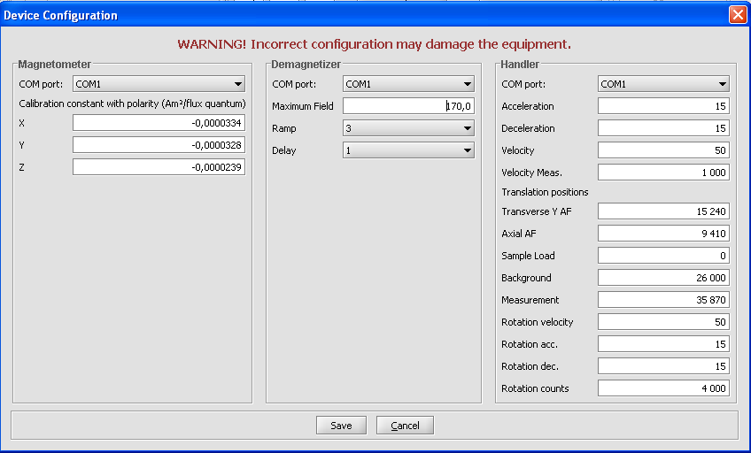
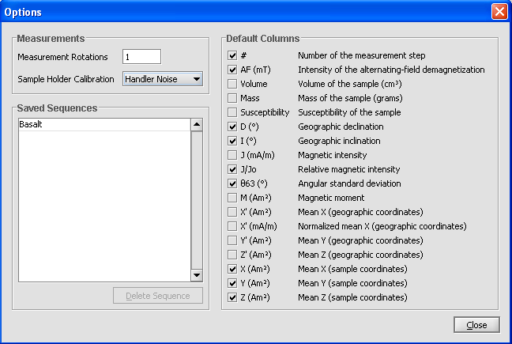

Configuration and Options
Squid Device Configuration
WARNING: this configuration should be only used by squid maintaince team who know what they are doing. These values should be set only when system is installed or changes are made to System.
Magnetometer
COM-port: serial port which Magnetometer is connected. Should be different than Handler, but can be same as Degausser.
Calibration constants: These values are important for getting right values from magnetometer. Accepts values in maximum of 12 decimals.
Degausser
COM-port: serial port which Degausser is connected. Should be different than Handler, but can be same as Magnetometer.
Maximum field: This value is maximum field value, in mT, Degausser can go. Minimum is always 1.1 mT. Be careful not to put too big value here as it can damage equipment. Maximum value is 300mT.
Ramp: This tells how fast Degausser ramps up the field. This can be set higher if needed.
Delay: Ramp delay.
Handler
COM-port: serial port which Handler is connected. Should be different than Magnetometer and Degausser.
Acceleration: Indicates how fast Handler accelerates to its velocity. Value is between 0...127.
Deceleration: Indicates how fast Handler decelerates from its velocity. Value is between 0...127.
Velocity: Maximum velocity handler moves. Value is between 50...8500
Velocity Meas.: Maximum velocity in Magnetometer handler moves, should be small. Value is between 50...8500
Transverse Y AF: Position relative to home where is Degausser Y coil (X is demagnetized there too). Value in steps.
Axial AF: Position relative to home where is Degausser Z coil. Value in steps.
Sample Load: Position relative to home where is sample load position. Value in steps.
Background: Position relative to home where Handler is when Magnetometer measures background. Value in steps.
Measurement: Position relative to home where Handler is when Magnetometer measures sample . Value in steps.
Rotation Velocity: Indicates how fast Handlers rotation accelerates to its velocity. Value is between 0...127.
Rotation Acc.: Indicates how fast Handlers rotation accelerates to its velocity. Value is between 0...127.
Rotation Dec.: Indicates how fast Handlers rotation decelerates from its velocity. Value is between 0...127.
Rotation counts: Tells how many steps is one full round (360 degree). Can be negative when direction is changed.
Options
This settings change behavior of the software and can be used to modify defaults.
Measurement
This changes how sample is measured. Measurement Rotations indicates how many times sample is measured and then taken mean value. Default is 1. Sample Holder Calibration is selected from all calibration projects. Its value is then noticed in measurement.
Saved Sequence
Here you can see all saved sequences. You can change sequences names by double-clicking it and typing new name and pressing enter to confirm change. If there is some old or not used sequences you can select one and delete it. Ones deleted, it cant be undeleted, so be careful.
Default Columns
Here you can select default columns which are shown on Measurement Sequence at start. This only affects new projects as all projects has their own columns and they can be changed from Measurement Sequence when project is open.